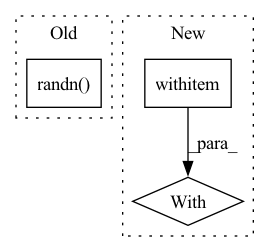

Pattern ID :702

Before Change
def setup_method(self):
X = np.random.randn(50, 3)
y = np.random.randn(50)
Xnew = np.random.randn(60, 3)
pnew = np.random.randn(60)
with pm.Model() as model:
cov_func = pm.gp.cov.ExpQuad(3, [0.1, 0.2, 0.3])
mean_func = pm.gp.mean.Constant(0.5)
After Change
)
// Dont include additive Gaussian noise, return full predicted covariance matrix
with model:
self.pred_mu, self.pred_covar = self.gp.predict(
self.x_new[:, None], point=self.map_full, pred_noise=False, diag=False
)
In pattern: SUPERPATTERN
Frequency: 3
Non-data size: 3
Instances
Fragment ID: 3414724
Project Name: pymc-devs/pymc3
Commit Name: 8f02bea5e37d115d26cc6e4e27b4d3b51ef96c43
Time: 2022-08-31
Author: w.j.engels@gmail.com
File Name: pymc/tests/test_gp.py
M Class Name: TestMarginalVsMarginalApprox
N Class Name: TestMarginalVsMarginalApprox
M Method Name: setup_method(1)
N Method Name: setup_method(1)
M Parent Class:
N Parent Class:
M File Name: pymc/tests/test_gp.py
N File Name: pymc/tests/test_gp.py
M Start Line: 854
M End Line: 871
N Start Line: 853
N End Line: 879
'>
Before Change
tensor_to_plot = torch.cat([self.fake_B, self.real_B], 3)
img = vutils.make_grid(tensor_to_plot)
vutils.save_image(tensor_to_plot, basename + "_construct.png")
self.set_input(torch.randn(1, self.embedding_dim).repeat(batch[0].shape[0], 1), batch[2], batch[1])
self.forward()
tensor_to_plot = torch.cat([self.fake_B, self.real_A], 3)
vutils.save_image(tensor_to_plot, basename + "_generate.png")
After Change
// net.eval()
def sample(self, batch, basename):
with torch.no_grad():
self.set_input(batch[0], batch[2], batch[1])
self.forward()
tensor_to_plot = torch.cat([self.fake_B, self.real_B], 3)
img = vutils.make_grid(tensor_to_plot)
'>
Fragment ID: 3414723
Project Name: euphoriayan/zi2zi-pytorch
Commit Name: d18cdce2416d812c3944db8aef913e06879b022b
Time: 2020-06-29
Author: ysq58000@foxmail.com
File Name: model/model.py
M Class Name: Zi2ZiModel
N Class Name: Zi2ZiModel
M Method Name: sample(3)
N Method Name: sample(3)
M Parent Class:
N Parent Class:
M File Name: model/model.py
N File Name: model/model.py
M Start Line: 204
M End Line: 212
N Start Line: 215
N End Line: 227
'>
Before Change
D_result = D_model_train(images)
D_real_loss = BCE_loss(D_result, y_real)
noise = torch.randn((batch_size, 100))
if cuda:
noise = noise.cuda(local_rank)
G_result = G_model_train(noise)
After Change
//----------------------//
scaler.scale(D_real_loss).backward()
with autocast():
G_result = G_model_train(noise_1)
D_result = D_model_train(G_result)
D_fake_loss = BCE_loss(D_result, y_fake)
//----------------------//
'>
Fragment ID: 3414717
Project Name: bubbliiiing/dcgan-pytorch
Commit Name: cdd6a27591afafb4f346acbea338b6e49c4333a8
Time: 2022-07-07
Author: 3323290568@qq.com
File Name: utils/utils_fit.py
M Class Name: AnonimousClass
N Class Name: AnonimousClass
M Method Name: fit_one_epoch(19)
N Method Name: fit_one_epoch(19)
M Parent Class:
N Parent Class:
M File Name: utils/utils_fit.py
N File Name: utils/utils_fit.py
M Start Line: 21
M End Line: 119
N Start Line: 25
N End Line: 114